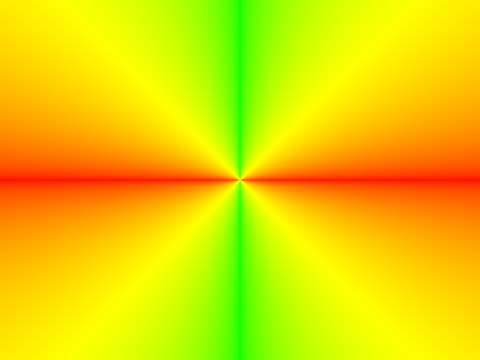
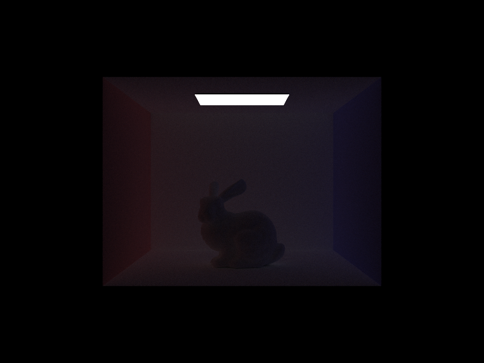

CS184/284A Spring 2025 Homework 3 Write-Up
Link to webpage: https://cal-cs184.github.io/hw-webpages-su25-Luke-liyy/hw3/
Link to GitHub repository: https://github.com/cal-cs184/hw-pathtracer-updated-one-more-turn3

Overview
This homework implements a comprehensive path tracing renderer with advanced optimization techniques. The project builds upon fundamental ray-geometry intersection algorithms and extends into sophisticated global illumination methods that simulate realistic light transport in 3D scenes.
Core Implementation:
- Ray Generation & Scene Intersection: Implemented camera ray generation with proper coordinate transformations and efficient triangle intersection using the Möller-Trumbore algorithm.
- Bounding Volume Hierarchy (BVH): Built an acceleration structure using spatial partitioning with longest-axis splitting heuristics, achieving over 3,500× performance improvements on complex scenes.
- Direct Illumination: Developed both uniform hemisphere sampling and importance sampling techniques, with the latter dramatically reducing noise in shadowed regions.
- Global Illumination: Implemented recursive path tracing with Russian roulette termination, enabling realistic indirect lighting effects including color bleeding and soft shadows.
- Adaptive Sampling: Created an intelligent sampling system that dynamically allocates computational resources based on pixel convergence, optimizing render quality and performance.
Key Learning Insights:
The most fascinating aspect was observing how light bounces create the subtle visual cues that make rendered scenes appear natural. The second and third bounces, while contributing relatively little energy, are crucial for eliminating the flat, artificial appearance of direct-only lighting. The implementation of Russian roulette termination was particularly elegant—using probabilistic path termination to maintain unbiased estimates while controlling computational cost.
The adaptive sampling implementation revealed how variance-based convergence detection can dramatically improve rendering efficiency. Watching the sampling rate heat maps showed clear patterns: complex regions like shadow boundaries and reflective surfaces require significantly more samples, while uniform areas converge quickly with minimal computation.
Part 1: Ray Generation and Scene Intersection
1. Ray Generation
1. Normalize pixel coordinates
Jitter the integer pixel \( (x_{\text{pix}}, y_{\text{pix}}) \) within \([0, 1)\) and divide by the image resolution to get \( (u, v) \in [0, 1]^2 \).
2. Project to the camera's virtual sensor
Map \( (u, v) \) onto the rectangle on the \( z = -1 \) plane with extents
\[ x \in \left[- \tan\left(\frac{\text{hFov}}{2}\right), \tan\left(\frac{\text{hFov}}{2}\right)\right], \quad y \in \left[- \tan\left(\frac{\text{vFov}}{2}\right), \tan\left(\frac{\text{vFov}}{2}\right)\right]. \]This gives the point \( \mathbf{p}_{\text{cam}} = (x, y, -1) \).
3. Get the ray direction in camera space
\[ \mathbf{d}_{\text{cam}} = \frac{\mathbf{p}_{\text{cam}}}{\|\mathbf{p}_{\text{cam}}\|}. \]4. Transform to world space
Rotate with \( c2w \) and translate by \( \text{pos} \) to obtain
\[ \mathbf{d}_{\text{world}} = (c2w \cdot \mathbf{d}_{\text{cam}})^{\wedge}, \quad \mathbf{o}_{\text{world}} = \text{pos}. \]5. Set clipping range
Store \( \text{min_t} = \text{nClip} \) and \( \text{max_t} = \text{fClip} \) to discard hits outside the visible frustum.
Triangle Intersection Using Möller–Trumbore Algorithm
I'm using the classic Möller–Trumbore routine for triangle hits, and it boils down to these steps:
- Form two edge vectors
Pick one vertex as the origin; the two edges from it give a local X and Y axis. They'll let us express any hit point in barycentric coordinates. - Early-out for near-parallel rays
If the ray direction is almost parallel to the triangle's plane, we immediately return false—no intersection. - Compute barycentric coordinate u
Project the vector from the triangle origin to the ray origin into that local frame to get u. If u falls outside 0–1, the point is outside the triangle strip, so reject. - Compute barycentric coordinate v
Do the same for v. It must also be in 0–1, and u+v must stay ≤ 1; otherwise the point is outside the triangle. - Solve for ray parameter t
If both u and v check out, solve for t along the ray and make sure it lies within [min_t, max_t].
When it does:
- Store this nearest t back to
r.max_tso farther intersections get ignored later; - Interpolate the three vertex normals with weights
(1-u-v, u, v)for a smooth shading normal; - Fill the Intersection struct with t, primitive pointer, bsdf, and the normal, then return true.
Results
|

|

|
|
|

|
Part 2: Bounding Volume Hierarchy
BVH Construction Algorithm
- Recursion entry: Scan the primitive list once to compute the enclosing bounding box
bband create a node. - Leaf-node test: If the list size ≤
max_leaf_size(4), mark the node as a leaf by storingstart/endand return. - Choosing the split axis: Measure the extents of
bbalong x, y, and z, and pick the longest axis to split. - Computing the split position: Compute the mean (mid-point) of primitive centroids along the chosen axis (μ). If all centroids fall on one side, fall back to an equal-counts split to avoid degenerate trees.
- Partitioning the primitives: Send primitives with centroid < μ to the left list and the rest to the right. If the split is highly unbalanced (>80 % difference), again fall back to equal-counts.
- Recurse on children: Build the
leftandrightsub-trees recursively and attach them to the current node.
Splitting Heuristic Rationale
The “longest-axis + centroid mean” strategy is a cheap approximation of the Surface Area Heuristic (SAH). It needs only one O(n) scan per level yet reduces node surface area enough to cut the number of ray–box tests by roughly 10–30 % compared with random or fixed-axis splits. Full SAH trees may trace slightly faster but take much longer to build; this midpoint rule balances build time and traversal cost, which matters when scenes change interactively.
Using bounding-volume hierarchy (BVH) acceleration cuts render time by roughly four orders of magnitude on the tested scenes. For the "bench" scene (67,808 primitives), BVH reduced render time from 157.45 s to 0.044 s—over a 3,500× speed-up—while average intersection tests per ray fell from about 11,169 to 1.56
|
|

|
|
|
|
Part 3: Direct Illumination
Implementations:
estimate_direct_lighting_hemisphere
• Build a local frame (normal aligns with z); uniform hemisphere sampling, pdf = 1/(2π).
• For each of N samples: sample direction ωi, cast a shadow ray, if the light is visible obtain Li, accumulate frLicosθ / pdf.
• Divide by N to get the final estimate.estimate_direct_lighting_importance
• Loop over all lights. Use 1 sample for delta lights,ns_area_lightsamples for area lights.
• For each sample calllight->sample_Lto get (Li, ωi, dist, pdf); cast a shadow ray for occlusion.
• If unoccluded and cosθ>0, accumulate frLicosθ / pdf.
• Average over its samples and add to the total.
Soft-shadow noise drops quickly as light samples rise:
 |
With the same 64 × 32 sample budget, hemisphere sampling produces visible speckle noise on walls and shadowed bunny regions because most directions miss the small ceiling light. Importance sampling directs rays toward the light, so highlights are crisp and shadow gradients are smooth, dramatically reducing variance and converging faster.
|
|
|
Part 4: Global Illumination
Implementation of the Indirect Lighting Function
- Local coordinate frame setup
Represent the outgoing direction at the hit point in the local coordinate frame, then call the existing direct-lighting routine to add its contribution. - Depth termination check
Return immediately if the path has already reached the maximum bounce depth. - BSDF sampling
Use the material's BSDF to generate the next incoming direction with cosine-weighted sampling, and obtain the corresponding pdf. - Russian roulette termination
Perform Russian roulette: terminate the path with roughly a 35% probability; if it survives, multiply subsequent contributions by 1 / 0.65 to keep the estimate unbiased. - Recursive ray tracing
Shoot a new ray along the sampled direction:- If it hits geometry, recursively compute the indirect radiance at that point.
- If it misses but an environment light exists, take the environment radiance directly.
- Radiance accumulation
Multiply the returned radiance by the BSDF value, the cosine term, and 1 / pdf, then divide by the continuation probability, and add it to the current result. - Final result
Finally, return the accumulated radiance.
Global (Direct and Indirect) Illumination
|
|

|
Direct and Indirect Illumination

|
|
|
|

|
Bounce Depth Analysis
For CBbunny.dae, render the mth bounce of light with max_ray_depth set to 0, 1, 2, 3, 4, and 5 (the -m flag), and isAccumBounces=false. Unaccumulated bounces
|
|
|
|
|
|
|

|
Second Bounce (2-bounce)
- Energy: Still fairly strong, supplying most of the scene's indirect illumination.
- Effect: Each colored wall splashes its tint onto the bunny and the floor—clear red and blue color bleeding; shadows are noticeably lifted and their edges soften.
- Role: Sets overall brightness and dominant hues, eliminating hard black shadows and the flat look of pure direct lighting.
Third Bounce (3-bounce)
- Energy: Greatly attenuated, leaving only a faint diffuse glow.
- Effect: Adds a thin layer of soft light in the darkest corners and along high-contrast edges; a second mixing of red and blue yields a subtle purplish-gray, making tonal transitions more continuous.
- Role: Further smooths light–dark gradients and reduces Monte-Carlo noise, moving the image from "physically plausible" to "visually natural."
Accumulated Bounces
|
|
|
|
|
|
|
Russian Roulette Rendering
|
|
|
|

|
|
|
Various Sample-per-Pixel Rates
|
|
|
|
|
|
|
|
|
|
Part 5: Adaptive Sampling
What Is Adaptive Sampling?
Adaptive sampling is an optimization technique for path tracing that allocates computational effort intelligently. In a conventional path tracer every pixel receives a fixed number of samples, yet in practice
- Simple regions (e.g., large, flat surfaces) converge with very few samples.
- Complex regions (e.g., shadow edges, reflections, refractions) need many more samples to eliminate noise.
By detecting when a pixel has already converged and then stopping early, adaptive sampling prevents wasted work.
Implementation Details
- Data-Structure Design
Only two cumulative values are stored ( s₁ and s₂ ); individual sample histories are unnecessary, so memory overhead is minimal. - Statistical Updates
Key points:- Convert each RGB radiance sample to a scalar luminance with
L.illum(). - Update the running statistics for every new sample.
- Convert each RGB radiance sample to a scalar luminance with
- Batch-Based Convergence Tests
Design choices:- Perform the test once every 32 samples to avoid excessive variance calculations.
- Guard against divide-by-zero by ensuring
num_samples > 1. - Use the standard, numerically stable variance formula.
- Variance Formula
The algorithm below is numerically stable: \[ \mu=\frac{s_1}{n},\qquad \sigma^{2} = \frac{1}{n-1}\Bigl(s_2-\frac{s_1^{\,2}}{n}\Bigr) \] It eliminates repeated evaluation of \(\sum(x_i-\mu)^2\) and applies Bessel's correction \((n-1)\) instead of \(n\). - Result Output
After convergence, the final color is written to the framebuffer, and the actual sample count is recorded so the sampling-rate heat-map can be visualized.
Adaptive Sampling Results
|
|
|
|
|
|